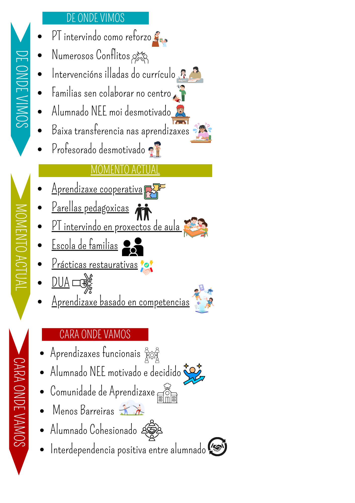

☰
Inicio
O centro
Con ollos de admiración
Ámbitos de aprendizaxe inclusivos
Aprendizaxe cooperativa
Prácticas restaurativas
Programas de intervención
PDI 1 · Sara
PDI 2 · José
PDI 3 · Samira
PDI 4 · Pedro
PDI 5 · Raúl
PDI 6 · Martín
Recursos
Ámbitos de traballo
Contos
Familia-escola
Ámbitos de aprendizaxe inclusivos
